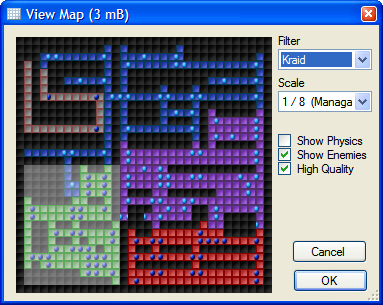

Display
Map
Editroid allows you to create a map showing all of
the screens of any rectangular portion of the map. Under the
(Special Tools) menu, select "View Map." You will be
given a number of options when viewing the map.
Filter - Allows you to display
screens from only one level.
Show Physics - Check this to
reveal secrets.
Show Enemies - Check this to
display enemies (can not be combined with Show Physics).
High Quality - Checking this
will result in a better looking map, but will take slightly longer
to create.
Scale - Selects the zoom of the
map.
As you select an area and pick your options, the
amount of memory the map image will consume is displayed up top. Avoid creating
extremely large maps. Click "OK" to create the map.